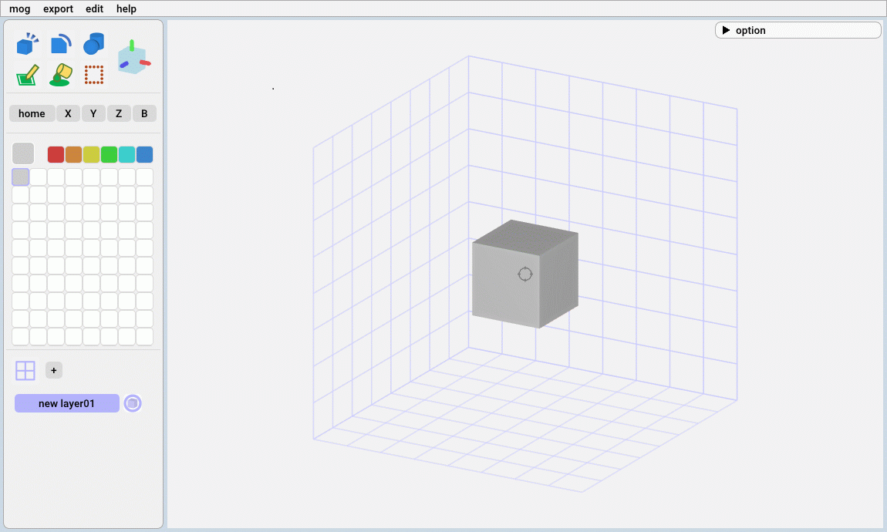
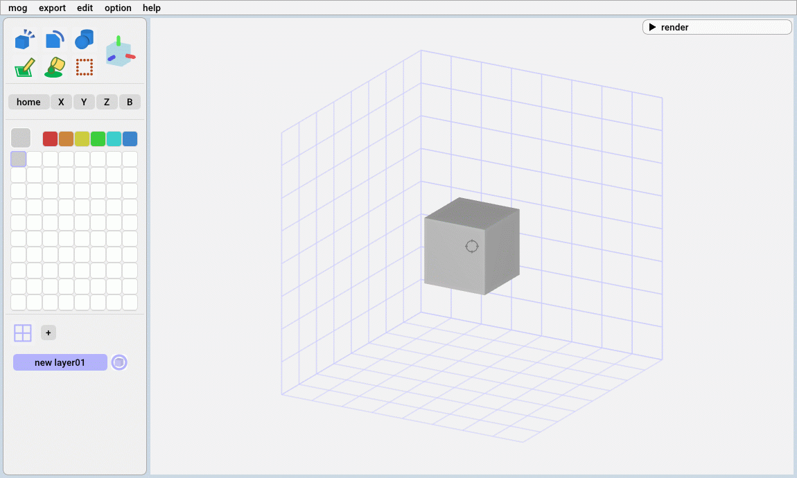
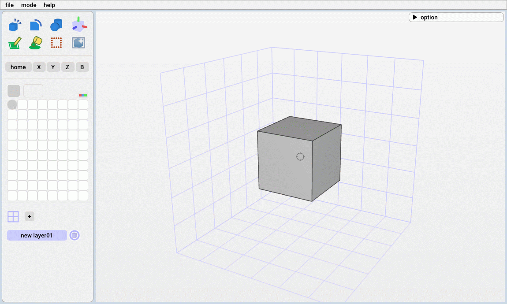
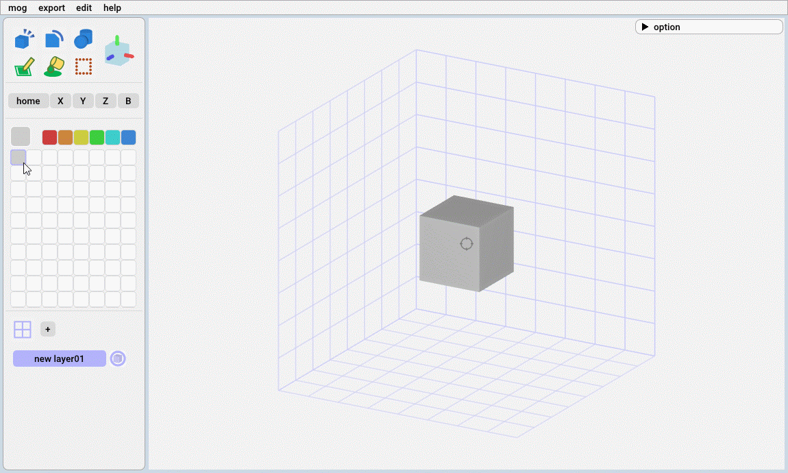
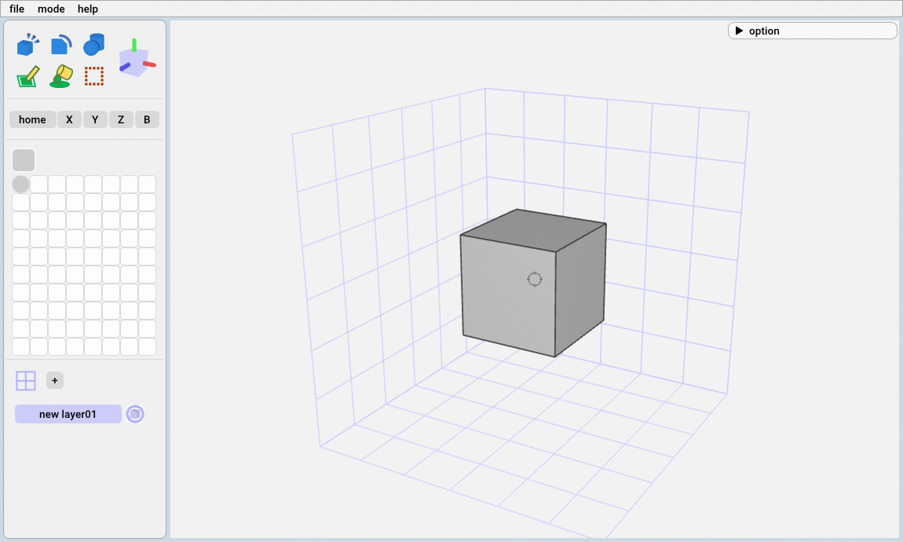
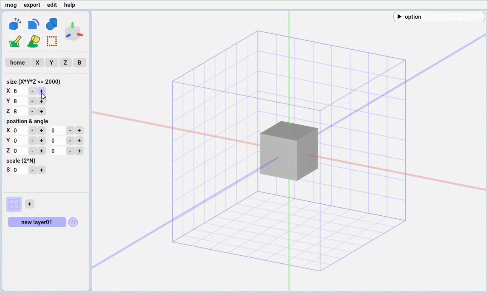

ここではMOG3Dの基本的な使い方を解説します。
合計で１５分程度の内容になります。
合計で１５分程度の内容になります。
視点の変更
スペースキーを押しながらマウス操作で視点を変更できます。

視点の変更
画面左にあるボタンを押すことで所定の視点に変更することもできます。

視点の変更ボタン
| ・左クリック＋ドラッグ | ：角度を変更 |
| ・マウススクロール | ：スケールを変更 |
| ・右クリック | ：クリックした場所を画面中央に移動 |
| ・中央クリック＋ドラッグ | ：位置を変更 |
|
左メニューの3D軸をクリックした後であれば、スペースキーなしで視点変更の操作が可能です |
|
視点の変更
画面左にあるボタンを押すことで所定の視点に変更することもできます。
視点の変更ボタン
ボクセルの加工
画面左上のメニューからボクセルの加工方法を選択できます。

編集メニュー
加工時に使う色は画面左のパレットから変更できます。
パレット
| block ブロックモード |
cut カットモード |
prim 基本形状モード |
| pen ペンモード |
fill 塗りつぶしモード |
select 選択モード |
編集メニュー
加工時に使う色は画面左のパレットから変更できます。
パレット
パレットの編集
色の種類や並びを変更できます。

色の移動（左クリック＋ドラッグ）

色の編集（右クリック）
| ・左クリック＋ドラッグ | ：パレットの色の移動 |
| ・右クリック | ：色の編集画面の表示 |
色の移動（左クリック＋ドラッグ）
色の編集（右クリック）
block ブロックモード
| ・左/右クリック | ：ブロックの追加/削除 |
| ・左/右クリック＋ドラッグ | ：ライン上でブロックを追加/削除 |
| ・Shift＋左/右クリック＋ドラッグ | ：領域内でボクセルを追加/削除 |
| ・マウススクロール | ：ブロックのサイズを変更 |
| ・中央クリック | ：選択した部分の色をスポイト |
| ・Alt＋左クリック＋ドラッグ | ：ブロックの拡張 |
ブロックの追加(左クリック＋ドラッグ)
ブロックの追加(Shift＋左クリック＋ドラッグ)
ブロックの拡張(Alt＋左クリック＋ドラッグ)
cut カットモード
| ・左/右クリック＋移動 | ：選択した領域を削除(自由曲線/直線) |
| ・マウススクロール | ：円のサイズを変更 |
輪郭のカット(左クリック：自由曲線、右クリック：直線)
prim 基本形状モード
| ・左クリック | ：選択した場所に基本形状を設定 |
| ・右クリック | ：基本形状の設定をキャンセル |
| ・軸を左クリック＋ドラッグ | ：基本形状の位置を移動 |
| ・Enter or OKボタン | ：配置した基本形状を確定 |
|
形状・位置・サイズの変更は左メニューからも操作できます。 |
|
基本形状の設定（左クリック）と移動（左クリック＋移動）
pen ペンモード
| ・左/右クリック | ：色の設定/クリア |
| ・左/右クリック＋ドラッグ | ：ライン上で色の設定/クリア |
| ・Shift＋左/右クリック＋ドラッグ | ：領域内で色の設定/クリア |
| ・マウススクロール | ：ブロックのサイズを変更 |
| ・中央クリック | ：選択した部分の色をスポイト |
色の設定(左クリック＋ドラッグ)
色の設定(Shift＋左クリック＋ドラッグ)
fill 塗りつぶしモード
| ・左/右クリック | ：塗りつぶし/クリア |
| ・中央クリック | ：選択した部分の色をスポイト |
塗りつぶし(左クリック)
select 選択モード
| ・左クリック | ：領域の設定 |
| ・Ctrl+左クリック | ：複数の領域の設定 |
| ・右クリック | ：領域の設定をキャンセル |
| ・Ctrl+X | ：選択した領域を切り取り[cut] |
| ・Ctrl+C | ：選択した領域をコピー[copy] |
| ・Ctrl+V | ：[cut]or[copy]した領域を貼り付け[paste] |
| ・Enter or OKボタン | ：張り付けた領域を確定 |
| 選択した領域の調整や[cut][copy][paste]の操作は左メニューからも操作できます。 | |
物体の選択と移動
レイヤーの編集
画面左下のメニューからレイヤーの追加や解像度の変更などができます。

レイヤーの編集メニュー

レイヤーの解像度の変更
| ・グリッドボタン | ：レイヤーの編集メニューの表示 |
| ・＋ボタン | ：レイヤーの追加 |
| ・レイヤー名のドラッグ | ：レイヤーの順序の変更 |
レイヤーの編集メニュー
レイヤーの解像度の変更
最後に
基本的な操作は以上になります。
不明点などがございましたらメールにてご連絡ください。->サポート
不明点などがございましたらメールにてご連絡ください。->サポート